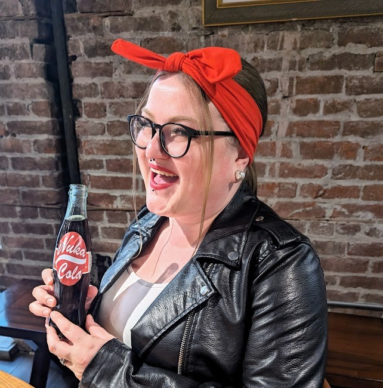

Introduction
Hi, my name is Alex. I am a second year IT student at Campus with experience in web development. I am a self-motivated and experienced IT professional with a passion for solving problems and creating innovative solutions.
In my spare time, I love playing piano, singing, video games, reading, writing, and watching movies.
